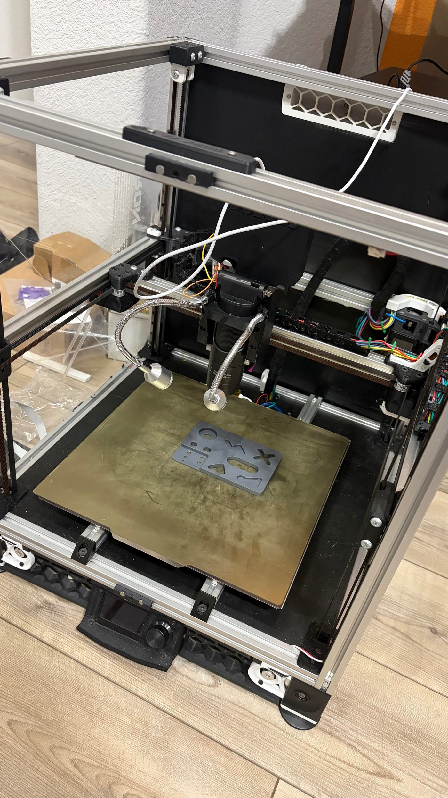
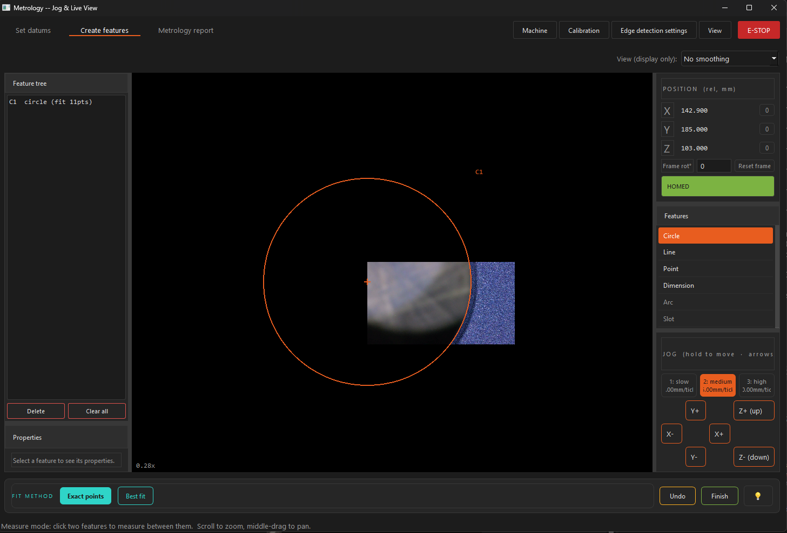
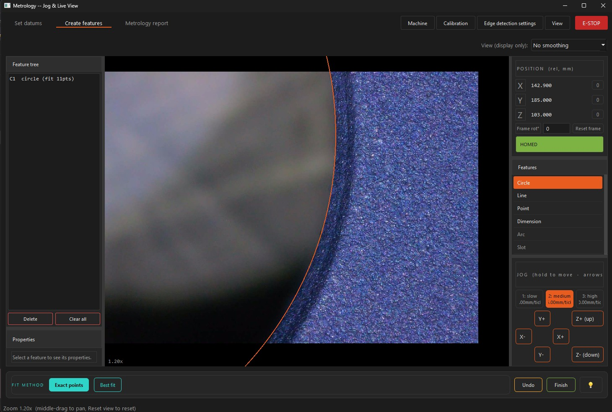
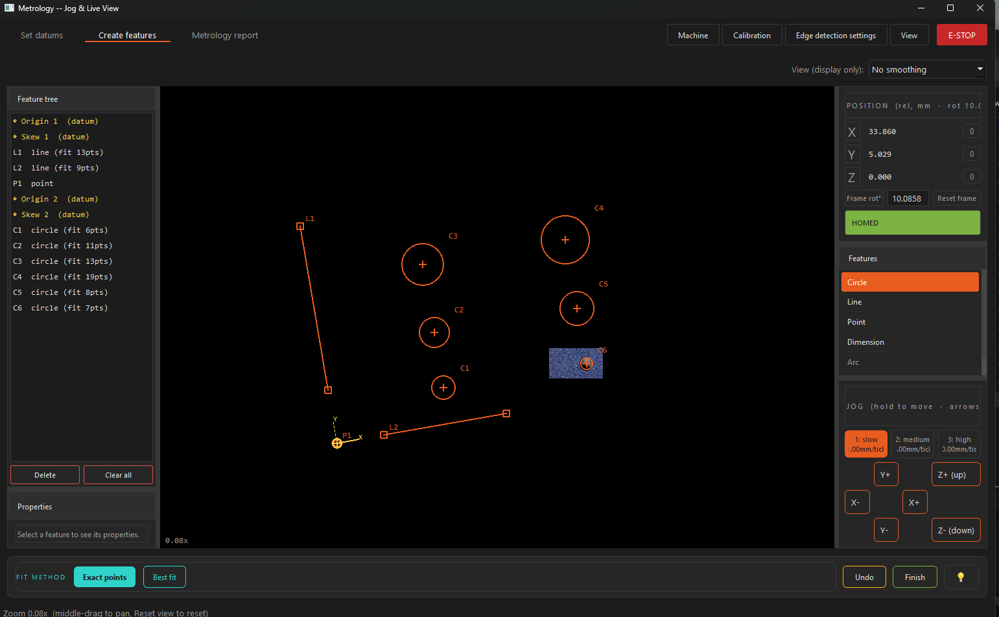

I was convinced that the core capability of a $50,000 commercial vision system I'd used at work could be delivered for a fraction of the cost. I built a proof of concept at home to test that idea. It worked, and three weeks later I had a digital microscope mounted to a broken 3D printer, measuring parts through a custom software interface.
The finished system measures parts up to 12" x 12" with an accuracy of about 0.001" (closer to 0.003" when measuring across different Z heights), for roughly $300 in hardware.

The motion platform is a repurposed Voron 2.4 3D printer running Klipper firmware. The printer already tracks its toolhead position precisely, so replacing the nozzle with a camera lets every pixel in the image be tied to a real X/Y position on the bed. This means measurements are not limited to the microscope's small field of view: features can be measured anywhere within the 12" x 12" work area.
I don't have a software background, so all of the code was written by Claude. My role was to define the requirements, design the hardware, test every build on the real machine, and report back what worked and what didn't. The result is a Python desktop application (built on OpenCV and PyQt6) with three main functions:
Calibration. It corrects lens distortion using a checkerboard target, determines the scale of each pixel, and characterizes the gantry itself: whether the X and Y axes scale equally, whether the motors travel the commanded distance, and how much backlash and repeatability error is present.
Edge detection. The user paints over an edge with a highlighter-style brush, and the software places measurement points along it. Edges are located to sub-pixel precision, points from scratches and shadows are rejected, and a line, circle or point is fitted to the remaining data.
Datums and dimensions. The user can set an origin and a skew on the part itself, so it does not need to be aligned perfectly square on the bed. Features can then be dimensioned against each other: distances, angles, diameters and gaps.

This is the key capability of the system. When a feature is larger than the camera's view, the operator jogs the camera around its edge and captures points at each position. Every point is stored in machine coordinates rather than screen pixels, so points captured at different positions combine into a single feature.

At this magnification, an edge is not a clean line. It is a soft transition covered in machining texture, burrs and shadows. Much of the development effort went into separating the true edge from this noise. Early versions locked onto surface scratches and the shadow of the hole wall, and were slow enough to make the interface lag. After profiling, the detection was made about 8 times faster by processing only the area under the brush and replacing the most expensive step with a more efficient method.

To validate the system, I set datums on the test plate, measure its hole pattern, and compare the measured hole sizes and positions against the drawing. Any disagreement points to an issue in calibration, the gantry, lighting or the software, which I then track down and correct.
Silent errors are the biggest risk. A measurement that looks correct but is wrong is far worse than a visible failure. Anything that could quietly affect the results, such as an assumed axis direction or an unverified hardware behavior, was either confirmed by testing or made into a user setting.
Hardware specifications need to be verified. The microscope advertises a high-resolution mode, but through standard camera software it only streams reliably at its default setting. Two attempts to force other modes resulted in a blank image, so the software now uses the default mode only.
AI can close a skills gap, but testing is still essential. Claude handled the programming, but its output was only as good as the testing behind it. Each change was checked on the physical machine, and problems found in testing drove the next round of development.
For about $300 and three weeks of work, the system measures parts up to 12" x 12" to within about 0.001" (about 0.003" across different Z heights). That is a fraction of the cost of the $50,000 commercial system that inspired it. Starrett should probably be worried.